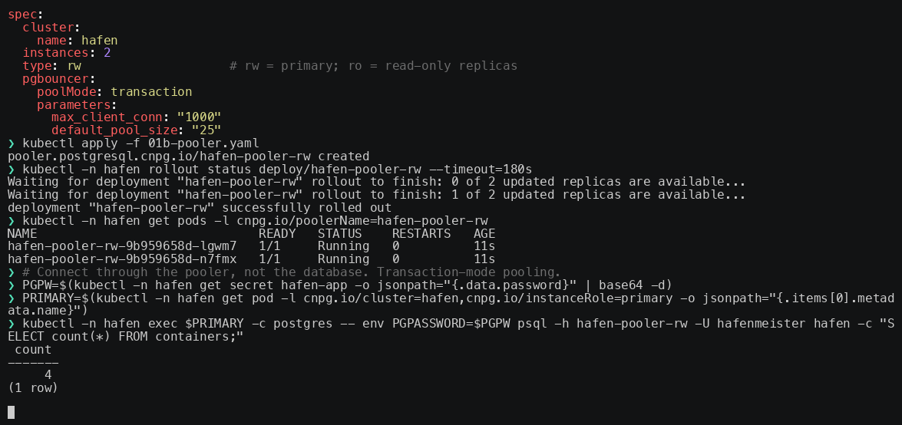
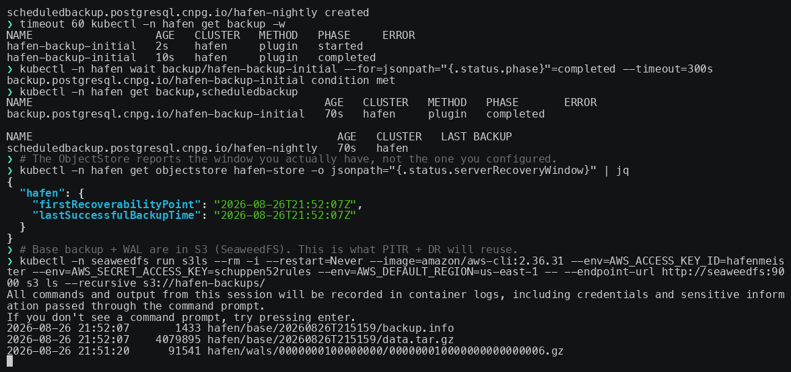
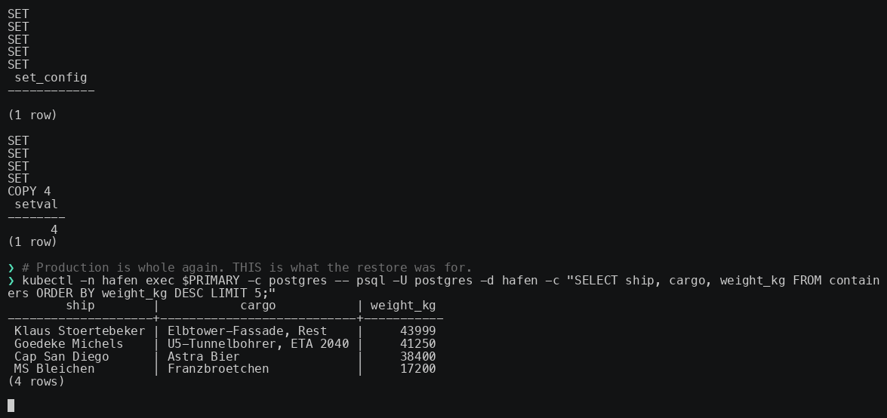
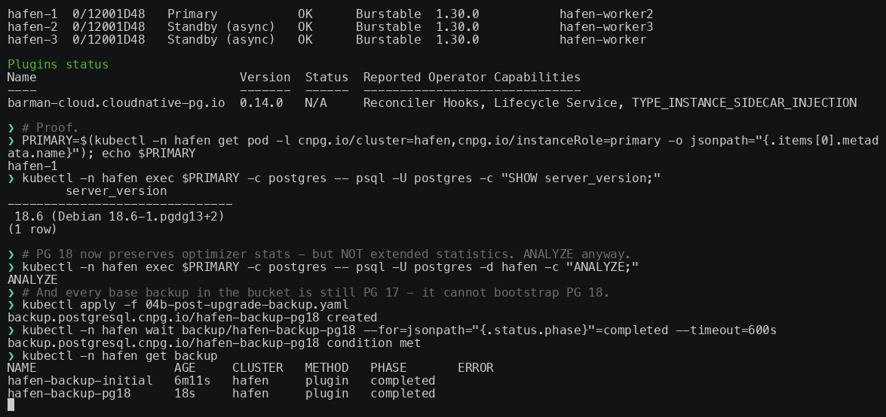
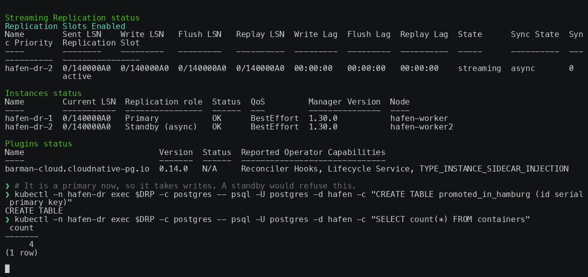

The five demos from the talk, recorded with asciinema against a local kind cluster and playable right here — pause, scrub, jump to a beat. Every command is real; nothing is sped up beyond 1.15×.




